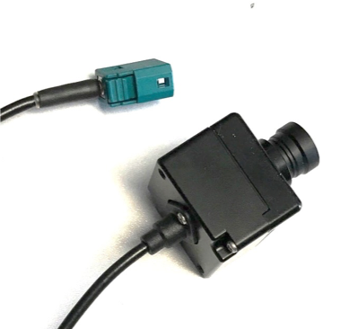
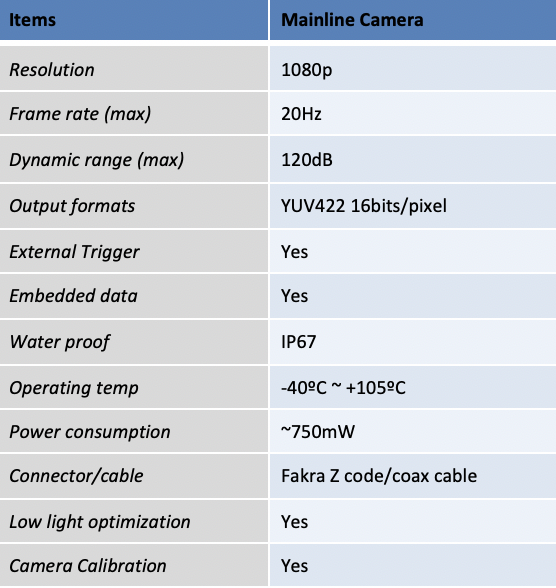

Guide for Argus Camera
Argus camera is a joint development venture product of Truly Seminconductors Ltd. and Baidu. The Argus camera features high dynamic range (HDR 120dB), internal/external trigger and OTA firmware update. It is well supported by the Apollo Sensor Unit. This line of product is based on ON Semiconductor MARS.
We recommend using three cameras, one with 6 mm lens, one with 12 mm lens and the last one with 2.33 mm to achieve the required performance for the traffic light detection application.

This camera can be connected to the Apollo Sensor Unit via the FAKRA connector for data transfer, trigger and OTA firmware update.
Product specifications

Disclaimer
This device is Apollo Platform Supported